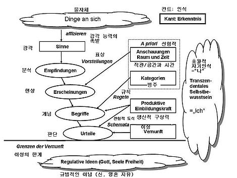

17~18세기 철학의 인식론은 크게 합리주의와 경험주의로 나뉘었다. 여기서 합리주의는 인간이 본래부터 지닌 선험적 이성을 중시하였고, 경험주의는 인간이 경험함으로써 지식을 얻는 귀납법을 중시하였다. 합리주의의 방식은 "백마는 희다"와 같이 술어가 주어의 개념에 이미 포함되어 있는 분석판단[14]을 하므로, 지식을 확장해 나가는 데 크게 도움이 되지 못하였고, 경험주의의 방식은 귀납적인 방법을 강조하며 종합판단을 한 나머지 진리의 필연성을 찾는 데 한계를 드러내었다.[주 3] 여기서 칸트는 이 두 사상을 통합한 선험주의를 주장하였다. 즉, 지식의 보편성과 필연성을 인정하면서도 인식을 확장하는 '선험적(선천적:a priori) 종합판단' 을 긍정하였다.
칸트는 《순수이성비판》에서 인간의 이성이 지닌 한계를 지적하면서 인간 인식에 선험적 형식을 도입하는 이른바 '코페르니쿠스적 전환'(Kopernikanische Wendung)을 시도하였다. '코페르니쿠스적 전환'이란 인간이 대상을 있는 그대로 인식하는 것이 아니라 인간의 인식이 대상의 관념을 만들어낸다는 생각이다.[11] 쉽게 말하면 인간은 대상이 있는 대로 아는 것이 아니라, 아는 대로 그 대상이 있다고 믿는다는 것이다. 따라서 칸트에게 진리는 주체의 판단형식에서 찾아야 하는 무엇이다.[11]
칸트의 인식론은 감성을 통해 얻은 감각을 범주를 사용하여 지성(Verstand:오성)[주 4]으로 인식하고, 초경험적인 것은 이성으로 인식한다는 것이다. 감성은 어떤 물자체를 지각하는 능력이며, 범주는 이러한 감각을 인식하게 하는 하나의 틀이다. 따라서 감성과 지성은 인간이 지각 하는 데 있어 없어서는 안되는 필수적인 요건인 셈이다. 여기서 칸트는 인간이 사물을 인식하는 데 시간과 공간 값이 필요하다고 본다. 구체적인 연장과 존재하는 시간이 없으면 우리는 인식을 할 수 없다고 보았기 때문이다. 다만, 감정과 같은 것은 공간 값은 없지만 시간 값만 있는 것으로 보았다. 칸트는 저서 《순수이성비판》에서 초경험적인 것을 이성으로 알려고 하는 것을 비판하였다. 가령 신의 존재를 증명하려는 존재론적 증명 등을 비판하여 여러 형이상학적인 사상들을 배격하고자 하였다. 이 말은 형이상학의 영역이 거짓이라는 것이 아니라, 우리가 인식 할 수 없는 것으로, 어떤 형이상학적 명제가 참인지 거짓인지는 알 수 없다는 것이다. 또한 칸트는 인간의 지성(Verstand)이 사물의 현상을 분류,정리할 수 있으나, 그 현상 너머에 숨은 본질에는 이를 수 없다고 보았다. 인간은 사물의 본질이나 신에 해당하는 물자체를 인식할 수 없는 것이다.[12] 따라서 칸트에 따르면, 기존의 형이상학은 인간이 인식할 수 없는 초감각적이고 초경험적인 것을 인식의 범주 안으로 끌어들이는 오류를 저지른 것이다. 칸트는 형이상학이 그런 오류에서 벗어나 이성의 인식체계에 대한 학문이 되어야한다고 생각했다.[10] 하지만 칸트는 형이상학적인 신, 영혼들의 존재를 도덕을 다루는 과정에서 다시 요청하게 된다.
